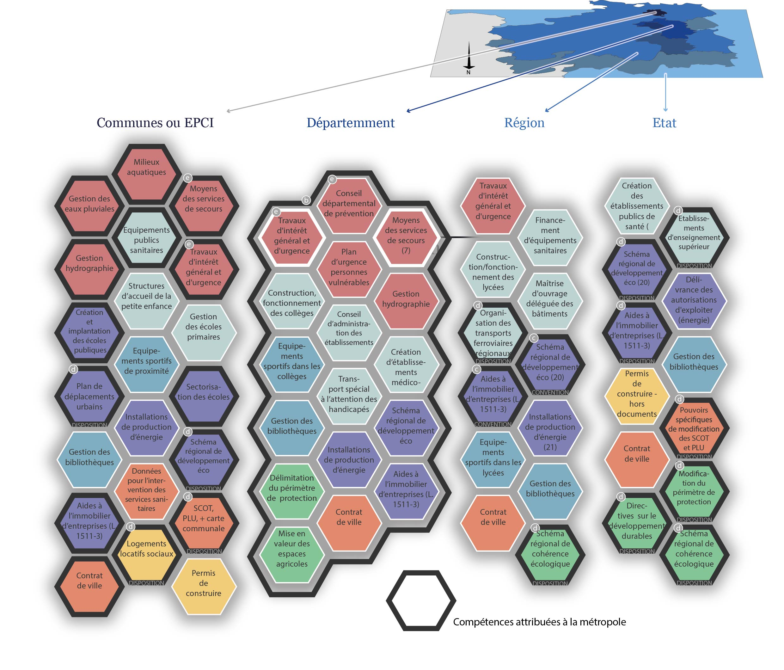
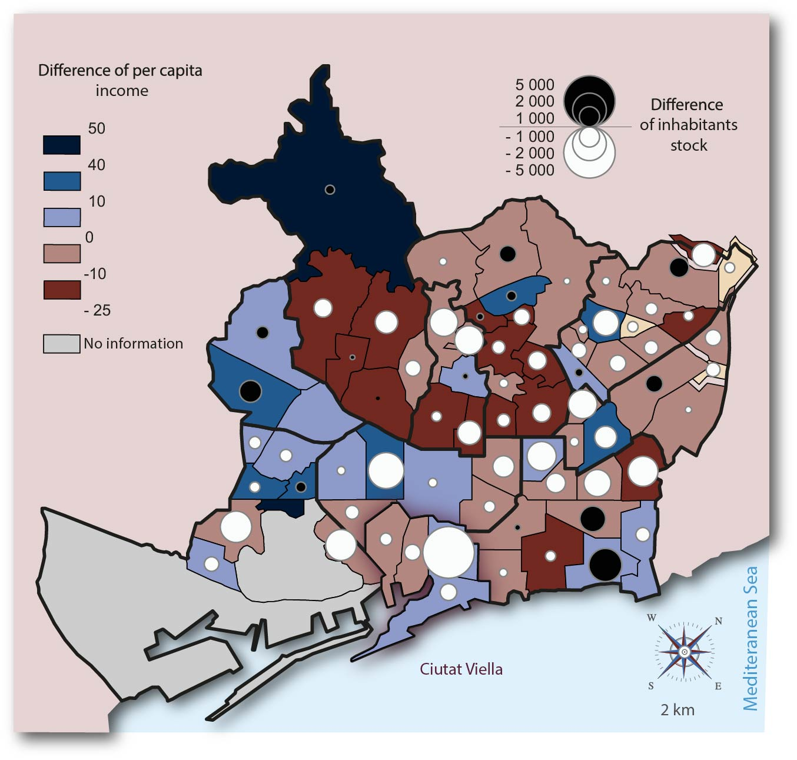

Le grand meccano de la création monétaire (voir)
Le Brésil secoué par les investisseurs (voir)
Dépenser pour relancer : des flux et des fuites (voir)
L’origine du profit selon Karl Marx (voir)
1981, l'occasion ratée (voir)
La population musulmane dans les Balkans (voir)
Riposte culturelle au Cachemire (voir)
Médecins, une concentration qui aggrave la pénurie (voir)
Des territoires en voie de désertification médicale (voir - version interactive)
TP1 : carte des flux immatériels
TP2 : carte en anamorphose
TP3 : Plan touristique
Croissance urbaine de Lyon
Localisation des population vulnérables en cas d'inondation
La métropole lyonnaise : quelles compétences ?
Parliamentary results for the 2015 general elections
Is there still a gentrification phenomon in Barcelona since the last few years ? - Evolution between 2009 and 2013
Mapa de Barcelona
Mappemondes - février 2017 (voir)
Projections cartographiques - février 2016 (voir)
Chargement des cartes ...